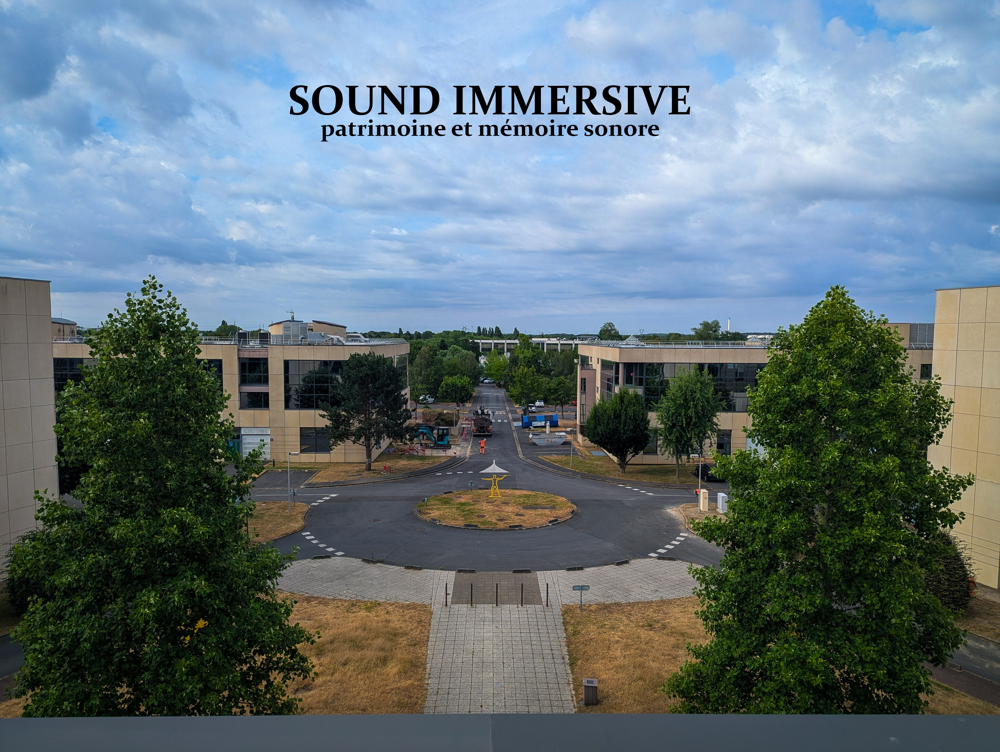

Choisissez un type de lieu.
Patrimoine et mémoire sonore
Des enregistrements sans artifice, pour vous plongez dans des endroits à des moments...
A ECOUTER AU CASQUE
Choisissez une carte pour commencer votre immersion.

Les Ulis: Travaux en résonance...